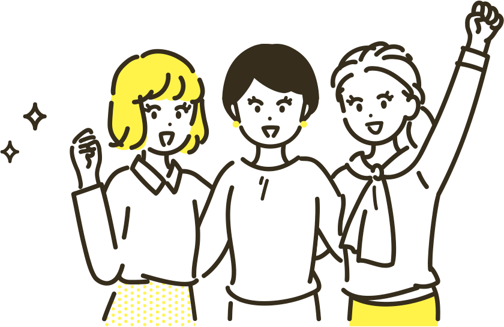

你也有這些視力問題嗎？
博士倫提供散光、老花、散光老花系列商品，幫助你一副解決散光、老花需求！
找出適合你的隱形眼鏡產品！
疏肝解鬱，宜解熱制養、消腫止痛


疏肝解鬱，宜解熱制養、消腫止痛
疏肝解鬱，宜解熱制養、消腫止痛

博士倫連續四年榮獲康健雜誌讀者票選
隱形眼鏡信賴品牌第一名
注意事項
- 配戴一般隱形眼鏡須經眼科醫師驗光配鏡取得處方箋，或經驗光人員驗光配鏡取得配鏡單，並定期接受眼科醫師追蹤檢查。
- 本器材不得逾中文說明書建議之最長配戴時數、不得重覆配戴，於就寢前務必取下，以免感染或潰瘍。
- 如有不適，應立即就醫。
- 北市衛器廣字第XXXXXXXXX號博士倫股份有限公司 消費者服務專線0800-004-088 衛部醫器輸字第027755號、衛部醫器輸字第028546號 TW-VC-2022-02-XXX
 馬拉松式追劇！３５歲ＯＬ老花眼提早報到
馬拉松式追劇！３５歲ＯＬ老花眼提早報到